速览
想表现爆炸时，往往只是让火焰朦胧地冒一下就结束了吧。1984 年有个叫《星际力量（Star Force）》的作品，是 Tecmo 的作品，当时叫 Tehkan，作为射击游戏爽快有趣，推荐。看看它的点阵爆炸图案：先闪光、爆炎冒起、变成烟消失，5 个图案——在那个时代，实在是很出色的爆炸图案；射击游戏里考虑到这程度的其实意外地少。这是《大乱斗》的爆炸图案，种类很多，但思路有大框架。首先是闪光：瞬间一亮，即刻传达「那里发生了激烈的事」。相对于爆炸范围，闪光相当长；注意闪光只是白色的话在白背景就看不见，这个图案也混入了足够的黑色。也画了冲击波和光晕。接着爆炎：更华丽地从中心喷出，是决定爆炸性格的地方，所以很重要；仍是清脆的感觉，会混入火花，依然有势头。另外实际的判定依游戏而定，并不在爆炎期间一直存在。然后黑烟：像接力一样提高烟的支配度，火焰带余韵地画着。最后收束：从游戏角度爆炸早点消失更好，但爆炸太短就没有手感；作为变化、作为「这里有过爆炸」的通知，这里都很重要，要让它完成使命。这一带还会穿插闪光般的东西，制造啪啪消失的气氛。此外还可以考虑爆炸时让画面闪光、加画面震动——尤其画面震动，有没有手感差很多。有时还会区分地面爆炸和空中爆炸：例如儿童林克的炸弹，在地面时向上飞散并在地面出冲击波。爆炸有种类，像智能炸弹那样长时间持续的爆炸，合适的表现又不同。
1. 常见的错误 0:04
想表现爆炸时，往往只是让火焰朦胧地冒一下就结束了吧。
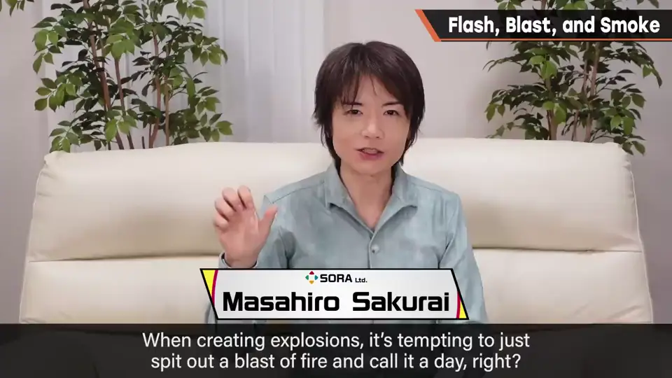
2. 《星际力量》的 5 帧 0:12
1984 年的《星际力量》，是 Tecmo（当时叫 Tehkan）的作品，作为射击游戏爽快有趣。
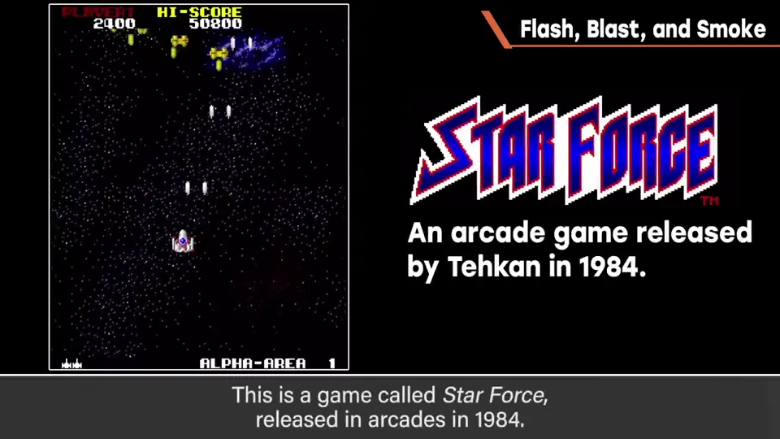
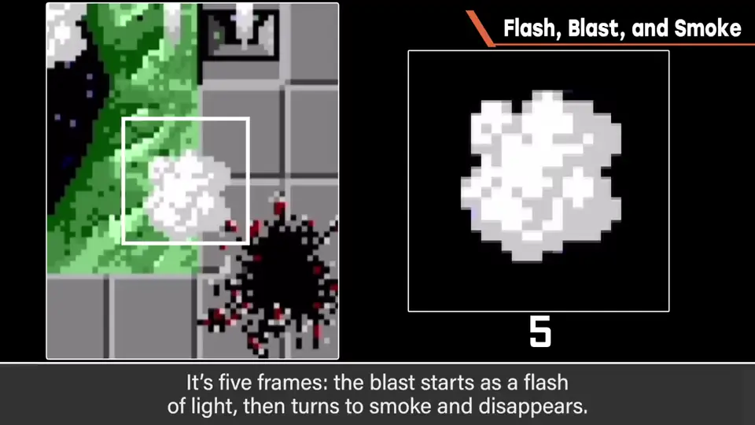
射击游戏里考虑到这程度的，其实意外地少。
3. 闪光 0:49
《大乱斗》的爆炸种类很多，但思路有大框架。首先是闪光：瞬间一亮，即刻传达「那里发生了激烈的事」。
相对于爆炸范围，闪光持续得相当长。
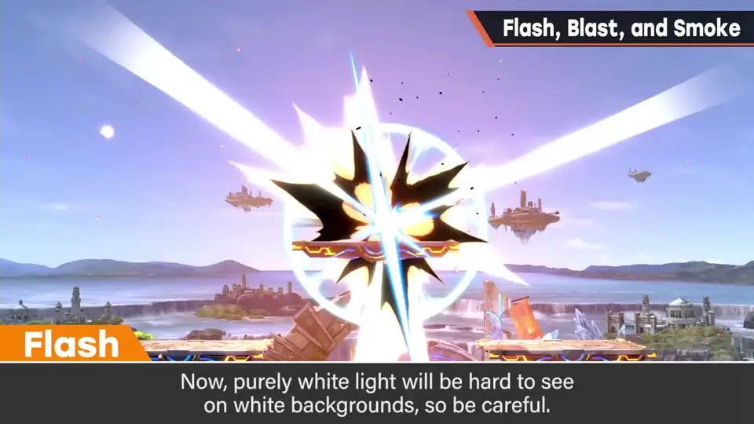
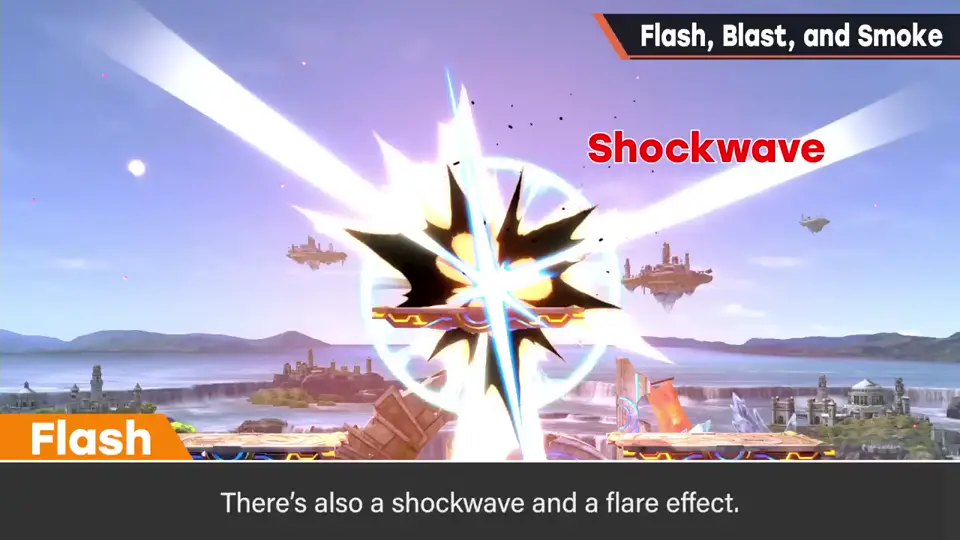
4. 爆炎 1:24
接着是爆炎：更华丽地从中心喷出。这是决定爆炸性格的地方，所以很重要。
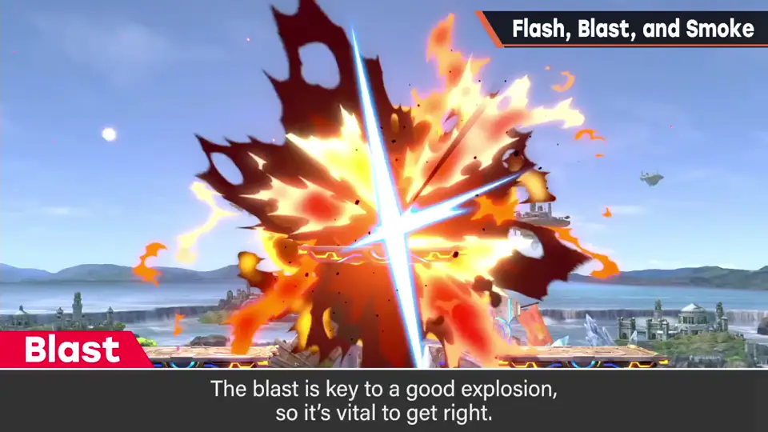
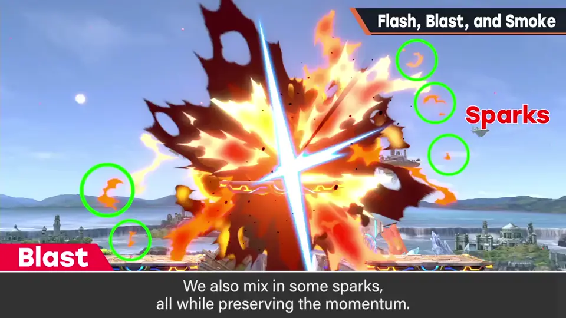
仍是清脆的感觉，会混入火花，依然有势头。实际的判定依游戏而定，不会在爆炎期间一直存在。
5. 黑烟与收束 1:48
然后是黑烟：像接力一样提高烟的支配度，火焰带着余韵描绘。
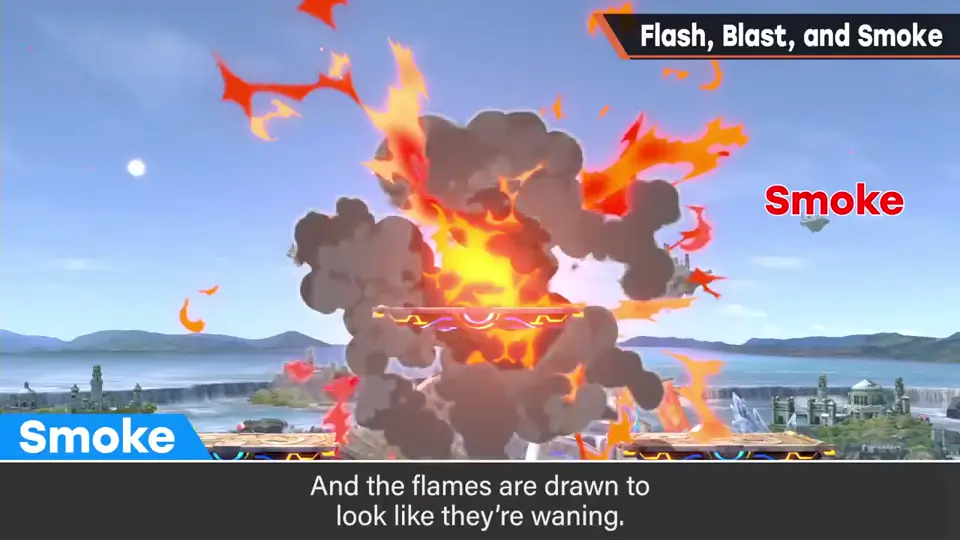
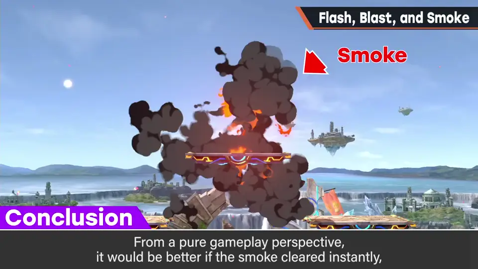
最后是收束。从游戏角度，爆炸早点消失更好；但爆炸太短就没有手感。
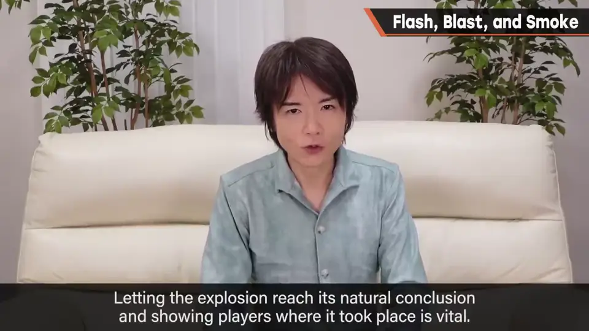
6. 其他手段 2:20
这一带还会穿插闪光般的东西，制造啪啪消失的气氛。此外还可以考虑：
- 爆炸时让画面闪光。
- 加画面震动——有没有手感差很多。
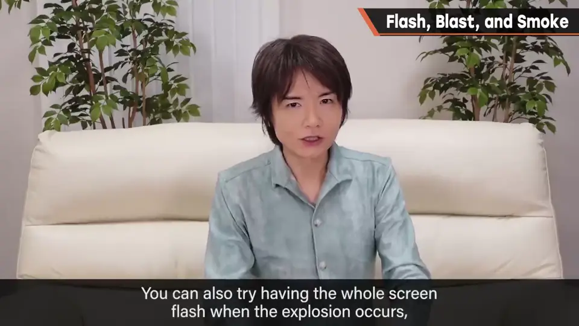
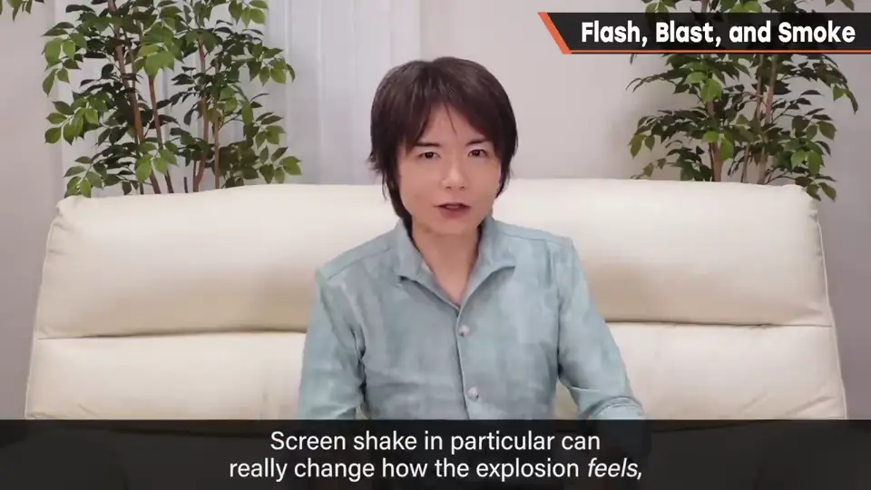
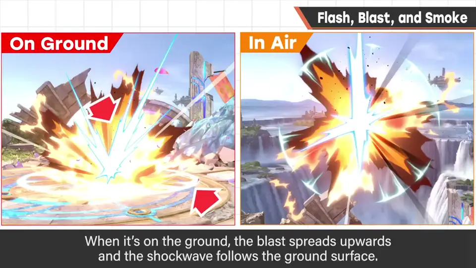
有时还会区分地面爆炸和空中爆炸：例如儿童林克的炸弹，在地面时向上飞散，并在地面上出冲击波。
爆炸有种类，像智能炸弹那样长时间持续的爆炸，合适的表现又不同。
自测题
1. 《大乱斗》爆炸的四个阶段是什么？
闪光、爆炎、黑烟、收束。 0:50
2. 闪光为什么要混入黑色？
纯白在白背景上看不见。 1:15
3. 为什么爆炸不能太短？
太短没有手感；收束也是「这里发生过爆炸」的通知。 2:10